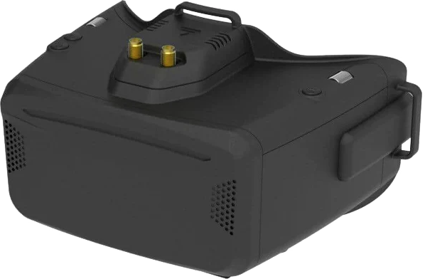
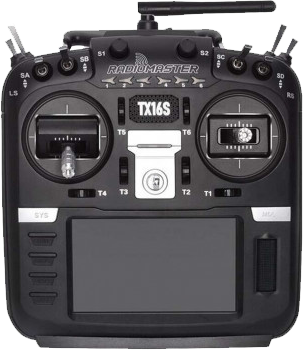
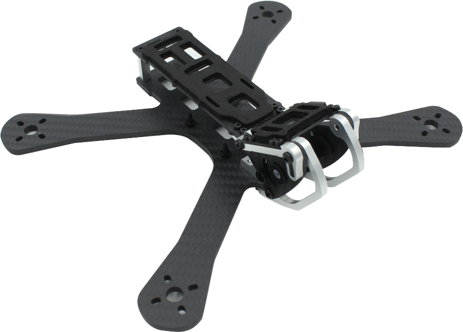

This video was the first time I ever went out with a real drone after a few hundred hours in a simulator.
While my flying ability wasn't that great I really liked how I put it together in editing alongside the track.
I got this one automatically ID claimed so it might not allow you to watch it here.
Nonetheless, it was my 3rd or so outing with my fullsize frame and I had just bought a new HD camera. This time I learned I didn't understand how to record or output video files in anything amounting to high quality.
Check out some of my gear below!
GOGGLES

Skyzone Cobra X
When I began researching types of goggles I was immediately turned off from the idea of using box goggles.
However I read many reviews and measured my IPD before realizing it would cost 100% more to move up in quality from what these offered.
For the price range these goggles are of solid construction, the screen is an acceptable quality, and the form factor is in my opinion better than other box goggles which are typically much larger and bulkier.
While this model does feature an 18650 battery slot you can also power it through a lipo or via a USB battery bank.
RADIO

Radiomaster TX16S
This is the only radio I've owned for RC purposes and I have to say I'm split on it.
I absolutely despise some of the design decisions and build quality but I also have learned so much modifying it to suit my needs.
I would warn anyone who might be considering this radio that you should be prepared to open it up day one.
So if the idea of unplugging small connectors and keeping track of screws terrifies you I would suggest you look to another radio.
If I had other radios to compare my experience against I could give some more feedback but its definitely all I need and way more right now.
FRAME

Armattan Chameleon
As well as being a cool looking frame this particular one has a sturdy single plate body minimizing bulk and adjustable camera mounts for both the analog and HD camera.
I've used this frame for freestyling for over 300 hours in simulation and for probably 50 hours in real life so I might be a bit biased but a 4s setup on this is smooth as butter.
The Armattan warranty is also great as it covers any part of the frame that may break, and FPV pilots know that if you're not breaking something you're not flying enough.
It's been fun showing off a little bit of one hobby through another hobby of mine.
Thanks for letting this take up space on the internet.